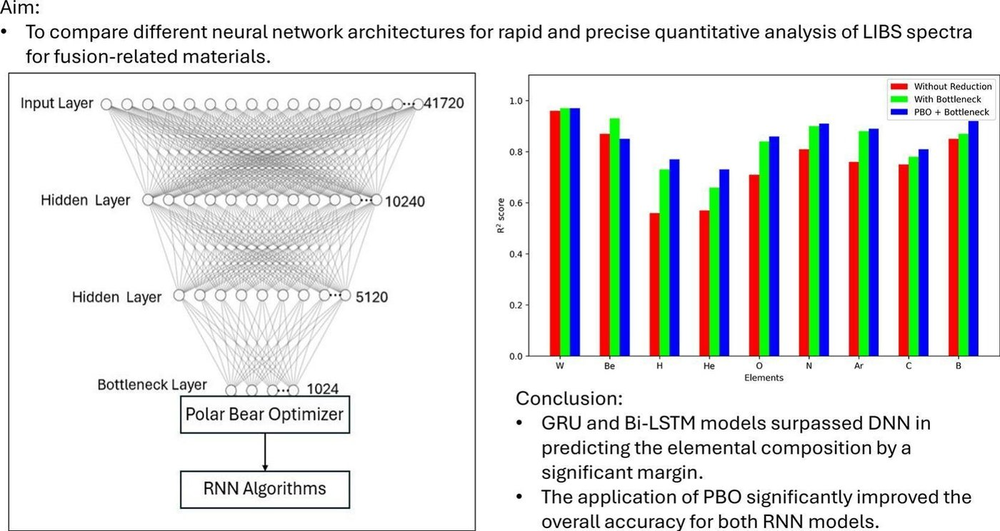

← Projects
Machine learning · PhD research
Neural networks for LIBS quantification
Comparing a deep neural network (DNN) with two recurrent networks (GRU and Bi-LSTM) for predicting the composition of fusion first-wall materials directly from LIBS spectra, then improving the recurrent models with a bottleneck encoder and hyperparameter optimisation.

| Dataset | 7,400 simulated LIBS spectra at resolving power 4000 |
|---|---|
| Targets | 9 elements (W, Be, H, He, O, N, Ar, C, B) + electron temperature |
| Models | DNN, GRU, Bi-LSTM |
| Dimensionality reduction | Fully connected bottleneck encoder to 1,024 features |
| Hyperparameter tuning | Polar Bear Optimizer (learning rate, hidden size, batch size) |
| Electron temperature | R² = 1.00 with GRU and Bi-LSTM |
| My role | Conceptualisation, methodology, visualisation, writing (original draft) |
| Element | DNN (full features) | GRU (bottleneck + PBO) | Bi-LSTM (bottleneck + PBO) |
|---|---|---|---|
| W | 0.37 | 0.97 | 0.96 |
| Be | 0.29 | 0.88 | 0.87 |
| H | 0.18 | 0.67 | 0.77 |
| He | 0.20 | 0.66 | 0.75 |
| O | 0.36 | 0.85 | 0.87 |
| N | 0.34 | 0.89 | 0.90 |
| Ar | 0.37 | 0.80 | 0.81 |
| C | 0.30 | 0.75 | 0.80 |
| B | 0.20 | 0.90 | 0.92 |
From Tables 5 and 8 of the paper. H and He score lowest because they are under-represented in the wavelength range used.